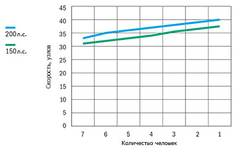

Катер Buster Cabin (Бустер Cabin)
Buster Cabin (Бустер Cabin) пользуется отличным успехом, не зависимо от погоды. Buster Cabin (Бустер Cabin) – отличный выбор, если для вас катер больше, чем просто средство передвижения. Модель специально спроектирована для более длительных путешествий по воде. Просторный салон отлично подходит для комфортабельного путешествия компании из восьми человек. При необходимости, дополнительно можно разместить на ночлег ещё двух друзей рыбаков.
Просторное внутреннее пространство кабины, позволяющее передвигаться в полный рост, специально спроектировано для превосходного отдыха большой компанией. Стеклянная крыша с люком, а также мягкое внутреннее led-освещение добавляют путешественникам комфорт. Большие окна кабины обеспечивают круговой обзор в любом направлении. Особое внимание уделено звукоизоляции. Модель Cabin – самая тихая модель семейства Buster. Тщательно продуманное наружное освещение обеспечивает безопасную эксплуатацию катера и в тёмное время суток, что особенно удобно во время осенней рыбалки. Сидения водителя и штурмана легко раскладываются и, объединившись с задним сидением, преобразуются в спальное место.
Buster Cabin (Бустер Cabin) надёжно служит в любое время года, независимо от погоды. Катер с тупо-образной носовой частью, утолщённым 5-ти миллиметровым днищем и с более глубоким углом килеватости, что позволяет использовать его на открытой волне, тщательно протестирован в жёстких условиях эксплуатации государственными органами власти. Благодаря оптимальной форме алюминиевого корпуса, Buster Cabin (Бустер Cabin) надёжное, безопасное и лёгкое в эксплуатации и обслуживании средство передвижения в любую погоду, полностью соответствующее концепции Buster. Оснащённый мотором 115-200 л.с., Buster Cabin (Бустер Cabin) надёжно доставит вашу компанию до нужного места в нужное время.
Технические характеристики катера:
| Параметр | Buster Cabin |
|
Длина |
6.92 м |
|
Ширина |
2.43 м |
|
Масса (Без двигателя) |
1185 кг |
|
Вместимость |
8 человек |
|
Рекоменд. мощность двигателя |
115 - 200 л.с. |
|
Емкость топливного бака |
200 л |
|
Осадка при полной нагрузке |
0,35 м |
|
Максимальная скорость |
40 узлов |
|
V-угол дна |
21° |
| График скорости | |
|  | |
Стандартное оборудование:
- Гидравлическое рулевое управление
- Очиститель ветрового стекла, правая сторона
- Очиститель ветрового стекла, левая сторона
- Закрывающиеся передняя и сдвигающаяся задняя двери, система запираний замков одним ключом
- LED-освещение носового кокпита
- Транцевые плиты с джойстиковым управлением
- Сиденья с раскладным механизмом/спальное место
- Ножка для кресла на рессорах
- Задние площадки на корме для работы и купания
- Забортный трап
- Леерные ограждения, крепления и кнехты (нержавеющая сталь)
- Огнетушитель
- Отсек для аккумулятора
- Центральный выключатель с автоматическими предохранителями
- Ручная трюмная помпа
- Автоматическая трюмная помпа
- Стационарный топливный бак
- Навигационные огни
- Мачта, съёмная
- Электрический разъём 12V
- Самоосушающийся кокпит
- Подготовительные работы для установки системы слежения Buster
Дополнительное оборудование:
- Тент на корму
- Комплект занавесок (окно крыши кабины, передние и боковые окна)
- Тарга-дуга (установка на заводе)
- Выносное рулевое управление на корме (под Yamaha, установка на заводе)
- Система для установки второго аккумулятора (части и кабели для подключения, без аккумулятора, установка на заводе)
- Навигационные огни, 2 шт.
- Обогреватель (установка на заводе)
- Кнехты springi в центре, нержавеющая сталь (установка на заводе)
- Поставка для установки дополнительного мотора
- Подставка для крепления датчика эхолота
- Компас
- Система запирания(трос, замки Abloy, система запирания одним ключом)
- Comfort*
- NAVI 7*
- NAVI 12*
- NAVI Plus*;
- Entertainment*;
*Дополнительные опции устанавливаемые на заводе-изготовителе
NAVI 7: Картплоттер Garmin 720s, компас, датчик эхолота с креплением
NAVI 12: картплоттер Raymarine C120W, компас Silva 58C.
NAVI Plus: антенна Raymarine 18" 4kW Digital Radome, переключатель crossover, кабель, цифровой модуль, транцевый датчик эхолота с подставкой для крепления.
Comfort: ножки для кресла на рессорах, ковровое покрытие, комплект занавесок.
Entertainment: стереосистема Alpine, колонки 2 шт., откидной столик.

{kind=link}
{kind=link}
{kind=link}
{kind=link}
{kind=link}
{kind=link}
{kind=link}